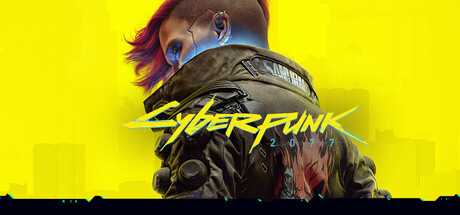

The legend of Zelda:
Tears of the kingdom
La leyenda de Zelda: El aliento de lo salvaje es un 2017 juego de acción y aventura
desarrollado y publicado por Nintendo. Establecido al final del Zelda línea, el jugador
controla un amnésico Enlace mientras se propone salvar Princesa Zelda y prevenir
Calamidad Ganon de destruir el mundo.
Los jugadores exploran el mundo abierto de
Hyrule mientras recopilan elementos y completan objetivos como rompecabezas y
misiones secundarias. Aliento de lo salvaje's el mundo no está estructurado y
fomenta la exploración y la experimentación; la historia se puede completar en un no
lineal moda.
Lanzado el 3 de marzo de 2017, para el U Wii y Nintendo Switch, Aliento de
lo salvaje fue planeado por primera vez como Wii U 2015 exclusivo antes de convertirse
en un juego de lanzamiento para el Switch.
Cyberpunk 2077

Cyberpunk 2077 es un RPG de aventura y acción de mundo abierto ambientado en la megalópolis de Night City, donde te pondrás en la piel de un mercenario o una mercenaria ciberpunk y vivirás su lucha a vida o muerte por la supervivencia. Mejorado y con contenido nuevo adicional gratuito. Personaliza tu personaje y tu estilo de juego a medida que aceptas trabajos, te labras una reputación y desbloqueas mejoras. Las relaciones que forjes y las decisiones que tomes darán forma al mundo que te rodea. Aquí nacen las leyendas. ¿Cuál será la tuya?
CREA TU PROPIO CIBERPUNK
Conviértete en un forajido urbano equipado con las últimas mejoras cibernéticas y escribe tu leyenda en las calles de Night City.
EXPLORA LA CIUDAD DEL FUTURO
Night City está repleta de cosas por hacer, lugares que visitar y gente que conocer. Y tú decides dónde ir, cuándo ir y cómo llegar allí.
CONSTRUYE TU LEYENDA
Emprende audaces aventuras y forja relaciones personales con personajes inolvidables cuyos destinos se decidirán a partir de las decisiones que tomes.
EQUIPADO CON MEJORAS
Vive la experiencia de Cyberpunk 2077 con un montón de cambios y mejoras en el sistema de juego, la economía, la ciudad, el uso del mapa y mucho más.
CONSIGUE OBJETOS EXCLUSIVOS
Consigue objetos del juego y artículos digitales inspirados por los juegos de CD PROJEKT RED como parte del programa Mis recompensas.
Starfield

Starfield es el primer universo nuevo en más de 25 años de Bethesda Game Studios, los galardonados creadores de The Elder Scrolls V: Skyrim y Fallout 4.
En este juego de rol de próxima generación ambientado entre las estrellas, podrás hacerte el personaje que desees y explorar con una libertad sin precedentes mientras te embarcas en un viaje épico para desentrañar el mayor misterio de la humanidad.
Corre el año 2330. La humanidad se ha aventurado más allá de nuestro sistema solar para asentarse en planetas nuevos y vivir como un pueblo espacial. Te unirás a Constelación, el último grupo de exploradores espaciales en busca de raros artefactos por toda la galaxia, y viajaréis por la vasta extensión del espacio en el juego más grande y ambicioso de Bethesda Game Studios.